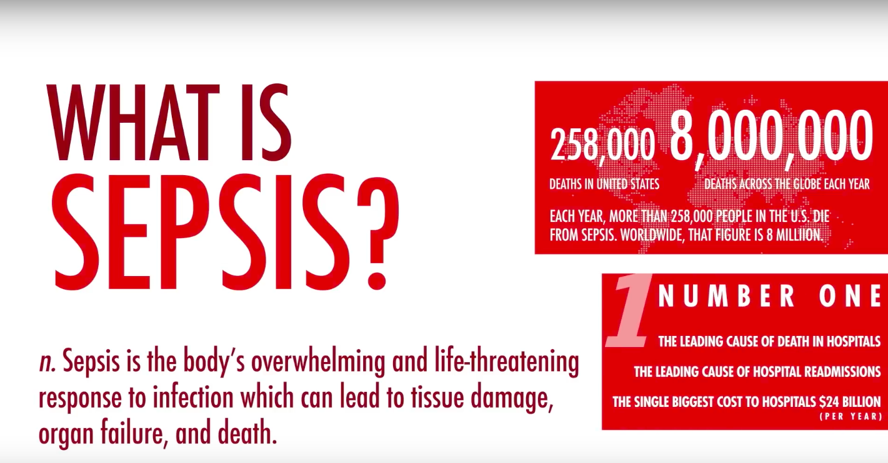

Sepsis is characterized as the body’s overwhelming and life threatening response to infection while can lead to tissue damage, organ failure and death. Normally, when someone gets an infection, their immune system mobilizes and fights it off, usually with the help of medication. But, in some, and researchers don’t understand why, the immune system stops fighting the invaders and turns on itself, almost like friendly fire. This is the start of sepsis.
Certain groups of people are at higher risk of developing sepsis because they are at higher risk of contracting an infection. These include the very young, the very old, those with chronic illnesses and those with a weakened immune system. Sepsis does not discriminate, and according to the Sepsis Alliance, it kills 258,000 American’s every year. That’s more than breast cancer, prostate cancer and AIDS combined.
Sepsis has been named as the most expensive in-patient cost in American hospitals in 2014 at nearly $27 billion each year. 40% of patients diagnosed with severe sepsis do not survive. Up to 50% of survivors suffer from post-sepsis syndrome. Until a cure for sepsis is found, early detection is the best hope for survival and limiting disability for survivors. For more information, please visit www.sepsis.org